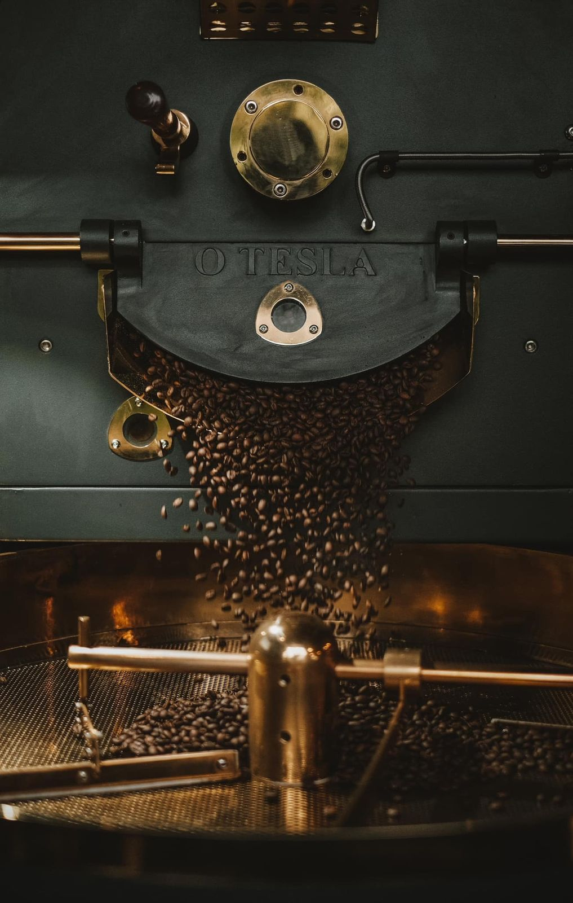
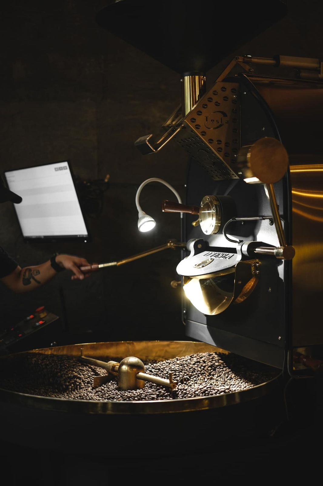

ĐÁNH GIÁ CÀ PHÊ RANG & NHẬN BIẾT HƯƠNG VỊ CHÌA KHÓA TẠO NÊN CÀ PHÊ ĐẶC SẢN
Trong hành trình rang cà phê, không ít nhà rang xay từng thất vọng khi mẻ rang không đạt được hương vị mong muốn. Thử và sai là điều tất yếu, nhưng việc đánh giá đúng quy trình rang và kiểm soát các biến số quan trọng sẽ giúp bạn rút ngắn thời gian và nhanh chóng tìm ra hồ sơ rang tối ưu.
14/1/2026 · 7 phút đọc · OTL Roaster

Hãy thử tưởng tượng: bạn vừa rang một mẻ cà phê mới, đợi vài ngày để hạt ổn định, xay cà phê, pha một tách và háo hức nếm thử. Hừm… thật thất vọng. Cà phê không có hương vị như bạn mong đợi, thậm chí còn không ngon chút nào.
Điều này xảy ra với rất nhiều nhà rang xay. Thử và sai là một phần không thể thiếu của quá trình rang, và việc tìm ra hồ sơ rang “hoàn hảo” có thể mất vài ngày, vài tháng, thậm chí lâu hơn. Nhưng đó chính là một phần trong hành trình xây dựng dấu ấn hương vị riêng của mỗi roastery (nhà rang xay).
Tuy nhiên, việc đánh giá có hệ thống máy rang và toàn bộ quy trình sẽ giúp bạn đạt được kết quả mong muốn nhanh hơn và hiệu quả hơn. Trong bài viết này, chúng tôi sẽ trình bày các yếu tố quan trọng giúp bạn đánh giá cà phê rang, nhận biết hương vị và loại trừ các vấn đề ngay từ sớm.
1. Phân biệt cà phê và các khuyết tật
Hãy bắt đầu bằng việc trao đổi rõ ràng với nhà cung cấp cà phê về loại hạt bạn đang tìm kiếm, cũng như kinh nghiệm của bạn với các loại cà phê đã thử trước đây. Việc này giúp hai bên dễ dàng xác định những loại cà phê phù hợp nhất với định hướng rang và khẩu vị của bạn.
Dù vậy, vẫn sẽ có những loại cà phê không đáp ứng được kỳ vọng – đó là điều bình thường. Để đảm bảo chất lượng, bạn nên phân loại cà phê nhân trước khi rang. Hệ thống phân loại của SCA (Specialty Coffee Association) là một phương pháp tiêu chuẩn để so sánh hạt cà phê và đánh giá mối liên hệ giữa khuyết tật và chất lượng tách.
Các tiêu chí phân loại bao gồm: màu sắc, kích thước hạt, vùng trồng, độ cao canh tác… Việc lựa chọn cà phê cẩn thận giúp bạn phần nào đánh giá được tiềm năng hương vị của hạt, ngay cả trước khi bắt đầu rang.
2. Phương pháp rang của bạn đã phù hợp chưa?
Mỗi loại cà phê đặc sản đều có đặc điểm riêng và xứng đáng với một cách tiếp cận khác nhau. Bạn không thể dùng một hồ sơ rang cho tất cả các loại hạt và mong đợi kết quả tuyệt vời.
Dù có những nguyên tắc chung cho từng nguồn gốc hoặc phương pháp chế biến, bạn vẫn cần quan sát và lắng nghe hạt cà phê trong máy rang. Hãy nghiên cứu, thử nghiệm, đánh giá kết quả và điều chỉnh để tìm ra phương pháp phù hợp nhất với từng loại cà phê.
3. Ghi lại quá trình rang
Việc lưu lại hồ sơ rang bằng phần mềm cho phép bạn phân tích toàn bộ quá trình trước khi đánh giá bằng cảm quan. Hồ sơ rang là tập hợp các dữ liệu (nhiệt độ, thời gian, các điều chỉnh kỹ thuật) thể hiện dưới dạng biểu đồ hoặc bảng, giúp bạn hiểu rõ những gì đã xảy ra trong suốt mẻ rang.
Phần mềm OTL Profiler cho phép lưu trữ và xuất hồ sơ rang, giúp bạn dễ dàng nhận ra những điểm cần cải thiện ở các lần rang tiếp theo. Khi đã tìm được hồ sơ rang lý tưởng, bạn có thể truy xuất và tái sử dụng, thậm chí phát lại chính xác hồ sơ đó.
Ngoài ra, hệ thống rang tự động của OTL có thể lưu và lặp lại hồ sơ rang mà không cần giám sát liên tục, giúp tiết kiệm thời gian và chi phí nhân công cho các xưởng rang.
4. Chuẩn bị cà phê để đánh giá (cupping)
Khi đánh giá các mẻ rang, hãy đảm bảo thời gian xả và làm nguội của các mẻ là như nhau. Sau khi rang, cà phê cần được để “lắng” (degassing) trong cùng một khoảng thời gian – dù là 2, 3 ngày hay theo sở thích cá nhân – nhưng điều quan trọng là phải nhất quán.
Xay cà phê
Hãy sử dụng một máy xay chuyên dụng cho thử nếm, được hiệu chuẩn chính xác. Không chỉ cài đặt xay quan trọng, mà bản thân máy xay cũng cần có khả năng xay ổn định. Đảm bảo lưỡi xay sạch, được căn chỉnh đúng và không bị mòn, vì lưỡi xay xuống cấp sẽ cho kết quả không nhất quán.
Tầm quan trọng của nước
Nước là thành phần chính trong tách cà phê và đóng vai trò dung môi trong quá trình chiết xuất. Nếu bạn nhận thấy hương vị hóa học hoặc khoáng chất lạ, rất có thể nguyên nhân đến từ chất lượng nước.
Hãy đảm bảo nguồn nước sử dụng ổn định và đạt các tiêu chuẩn của SCA. Việc lắp đặt hệ thống lọc và theo dõi các thông số nước sẽ giúp loại trừ yếu tố này khi đánh giá cà phê.
5. Các hương vị thường gặp và ý nghĩa của chúng
Mùi khói
Mùi khói thường xuất hiện do cách rang. Nguyên nhân phổ biến là luồng không khí trong máy rang không đủ hoặc rang quá tối. Dù khó loại bỏ hoàn toàn, việc điều chỉnh airflow hợp lý sẽ giúp giảm đáng kể mùi khói không mong muốn.
Với máy rang OTL, luồng khí được tối ưu giúp hạt rang có mùi khói nhẹ nhất, thậm chí chỉ còn hương thơm tự nhiên của cà phê rang.
Độ axit (vị chua)
Độ axit chịu ảnh hưởng lớn từ nhiệt độ và tốc độ rang. Rang ở nhiệt độ quá cao có thể làm mất độ chua, đồng thời gây cháy xém và làm cà phê phát triển quá nhanh, không kịp hình thành vị ngọt tự nhiên.
Vị ngọt phát triển sau độ chua, vì vậy việc cân bằng hai yếu tố này là rất quan trọng.
Vị ngọt trong vị đắng
Vị ngọt là một trong những yếu tố được đánh giá cao nhất trong cà phê đặc sản. Sự phát triển đầy đủ của cà phê từ giai đoạn úa vàng đến nứt đầu (first crack) giúp đường trong hạt được caramen hóa, tạo nên độ ngọt và chiều sâu hương vị.
Kéo dài giai đoạn này một cách hợp lý sẽ tăng độ phức tạp, nhưng rang quá lâu có thể làm mất đi độ tươi sáng của tách cà phê.

Máy rang OTL
OTL – GIẢI PHÁP MÁY RANG CHO CÀ PHÊ ĐẶC SẢN
Với nhiều năm kinh nghiệm trong lĩnh vực chế tạo máy rang và đội ngũ đạt chứng chỉ SCA, Công ty TNHH Công Nghiệp OTL mang đến giải pháp máy rang OTL giúp kiểm soát nhiệt, luồng khí và hồ sơ rang một cách chính xác. Nhờ đó, nhà rang xay có thể giảm lỗi, tăng tính ổn định và dễ dàng tìm ra hương vị cà phê đặc sản mang dấu ấn riêng.